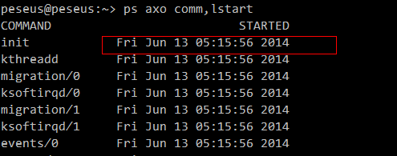

如何查看进程详细启动时间
上周和贱贱一起定位nginx监听的端口和nginx配置不一致的问题，发现**ps -ef**命令不能输出进程启动详细时间，没有年份信息。这导致不能确定是配置修改在前，还是启动在前。那怎样才能得到精准的启动时间呢？
通过百度找资料，发现通过ps axo能解决这个问题。ps axo comm,lstart命令的输出如下：

第二列就是精准的程序启动时间
。对于查看一个程序的所有起停记录，暂时还没有找到相应的方法。在/var/log/messages只能查到ssh登录之类的记录，没有进程起停记录
参考：
[1] http://bbs.chinaunix.net/thread-3752076-1-1.html